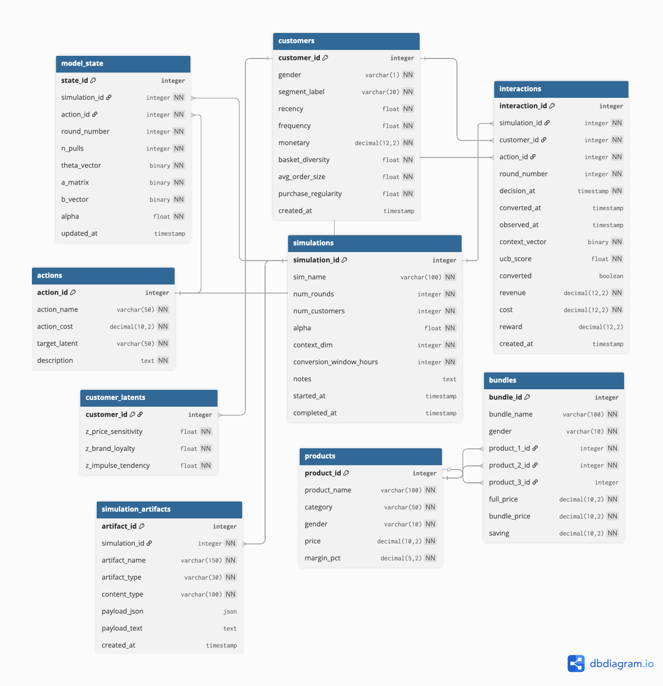

Database — PostgreSQL
Owner: Hayk Alekyan · Branch: db
ERD

Schema overview
Nine tables in three layers.
Simulation layer — generated once before bandit runs:
| Table | Purpose |
|---|---|
customers |
One row per simulated customer — RFM context vector for LinUCB |
customer_latents |
Simulation-only hidden variables — latent traits that generated RFM features and drive simulated conversion |
products |
Static fashion product catalog included as scaffolding for future item-level personalization |
bundles |
Pre-defined curated outfits included as scaffolding for future bundle-level personalization |
The current MVP does not select exact product SKUs or exact bundle configurations. The bandit selects promotional action types.
Bandit layer — grows during simulation:
| Table | Purpose |
|---|---|
actions |
5 promotional arms — static, seeded once |
simulations |
One row per experiment run |
interactions |
Every (customer, action, reward) decision — core training log |
model_state |
LinUCB A, b, θ per action — persists across container restarts |
Artifact layer — stores generated file payloads after the local CSV/report directory is written:
| Table | Purpose |
|---|---|
simulation_artifacts |
JSON/text payloads for generated DS files keyed by simulation |
The DS generator keeps the local artifacts and then loads those files into the database.
Schema files
The schema is split across five files, run in order by PostgreSQL on first container start:
| File | Contents |
|---|---|
db/1_schema.sql |
All table definitions |
db/2_indexes.sql |
Performance indexes |
db/3_initial_insert.sql |
Seed data — actions, products, bundles |
db/4_views.sql |
Read views for customer latents and simulation summaries |
db/5_stored_procedures.sql |
Write procedures for customer upsert, interaction logging, and feedback |
Time dimension in interactions
Three timestamps capture the decision-to-outcome gap:
decision_at ← when the system assigned the action
│
│ [conversion_window_hours — default 48h]
│
converted_at ← when purchase occurred (NULL until observed)
observed_at ← when model received outcome and updated
converted, revenue, reward are NULL until observed_at is set.
In the MVP, outcomes are generated by the DS batch workflow or API simulation logic. A future scheduled workflow could handle delayed outcome observation after the conversion window.
Setup
docker-compose up db pgadmin
Schema initialises automatically. All 8 tables and seed data are created on first start.
pgAdmin setup (first time only)
pgAdmin does not auto-connect. After running the command above:
- Open http://localhost:5050
- Login:
admin@admin.com/admin123 - Right-click Servers → Register → Server
- General tab — Name:
campaign - Connection tab:
- Host:
db - Port:
5432 - Database:
campaign - Username:
campaign_user - Password:
campaign_pass - Save password: on
- Click Save
Navigate to:
Servers → campaign → Databases → campaign → Schemas → public → Tables
You should see 9 tables. actions has 5 rows, products has 12 rows, bundles has 6 rows.
CRUD helpers
All DB access goes through campx/api/db_interactions.py. No raw SQL elsewhere.
Every function takes a SQLHandler instance as its first argument.
from SQLHandler import SQLHandler
import db_interactions as dbi
db = SQLHandler(
host=os.getenv("DB_HOST", "db"),
dbname=os.getenv("POSTGRES_DB", "campaign"),
user=os.getenv("POSTGRES_USER", "campaign_user"),
password=os.getenv("POSTGRES_PASSWORD", "campaign_pass"),
)
Customers
dbi.get_all_customers(db)
dbi.get_customer_by_id(db, customer_id)
dbi.get_customer_latents(db, customer_id)
dbi.insert_customer(db, gender, segment_label, recency, frequency,
monetary, basket_diversity, avg_order_size, purchase_regularity)
dbi.insert_customer_latent(db, customer_id, z_price_sensitivity,
z_brand_loyalty, z_impulse_tendency)
Interactions
dbi.log_interaction(db, simulation_id, customer_id, action_id,
round_number, context_vector_bytes, ucb_score, cost)
dbi.observe_outcome(db, interaction_id, converted, revenue,
converted_at, observed_at)
dbi.get_pending_interactions(db, older_than_hours=48)
Model state
dbi.get_model_state(db, simulation_id, action_id)
dbi.upsert_model_state(db, simulation_id, action_id, round_number,
n_pulls, theta_bytes, a_bytes, b_bytes, alpha)
Simulations
dbi.create_simulation(db, sim_name, num_rounds, num_customers, alpha)
dbi.complete_simulation(db, simulation_id)
DS artifacts
dbi.upsert_simulation_artifact(db, simulation_id, artifact_name,
artifact_type, content_type,
payload_json=rows_or_object)
dbi.list_simulation_artifacts(db, simulation_id)
dbi.get_simulation_artifact(db, simulation_id, artifact_name)